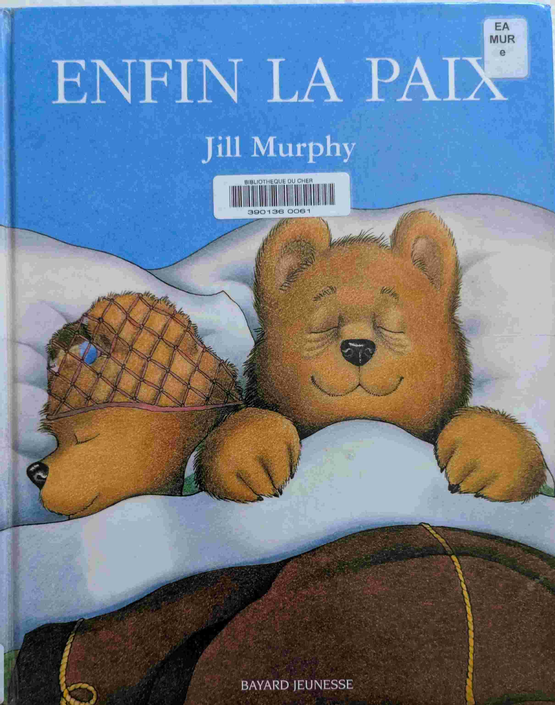
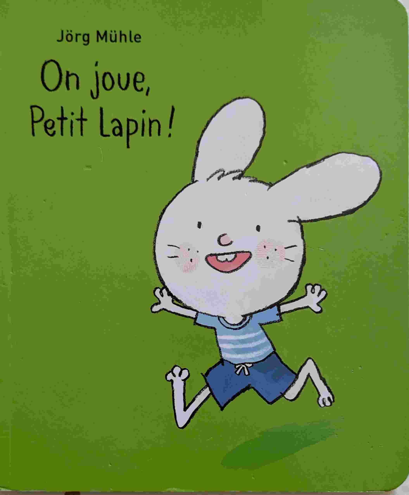
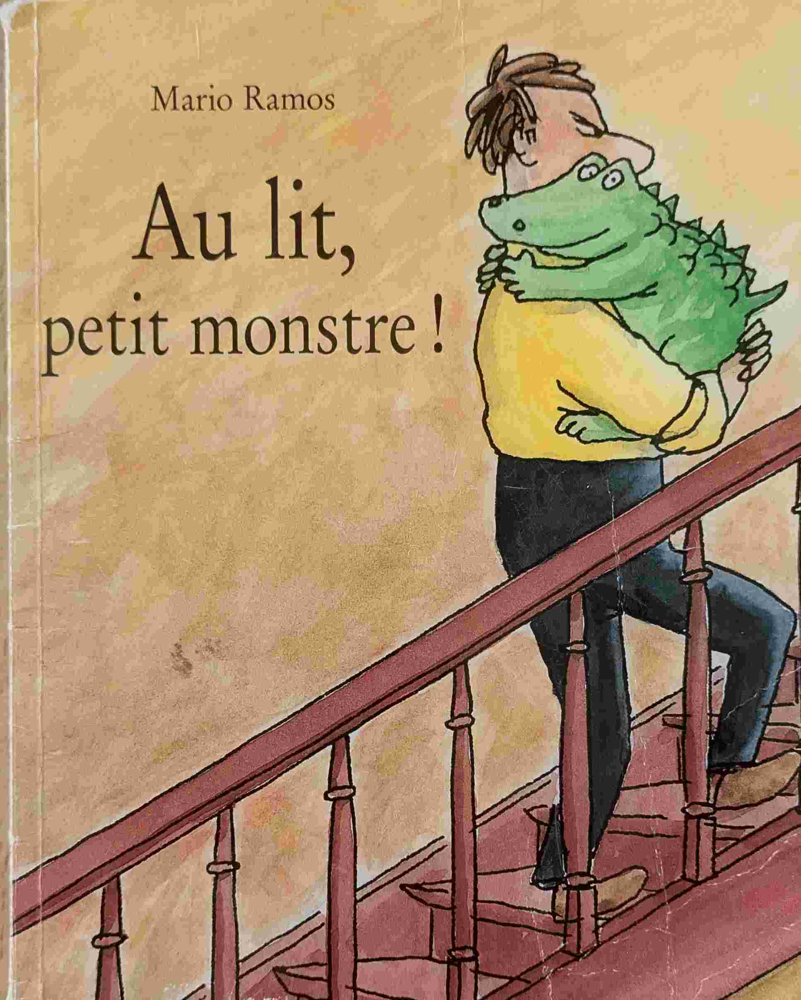
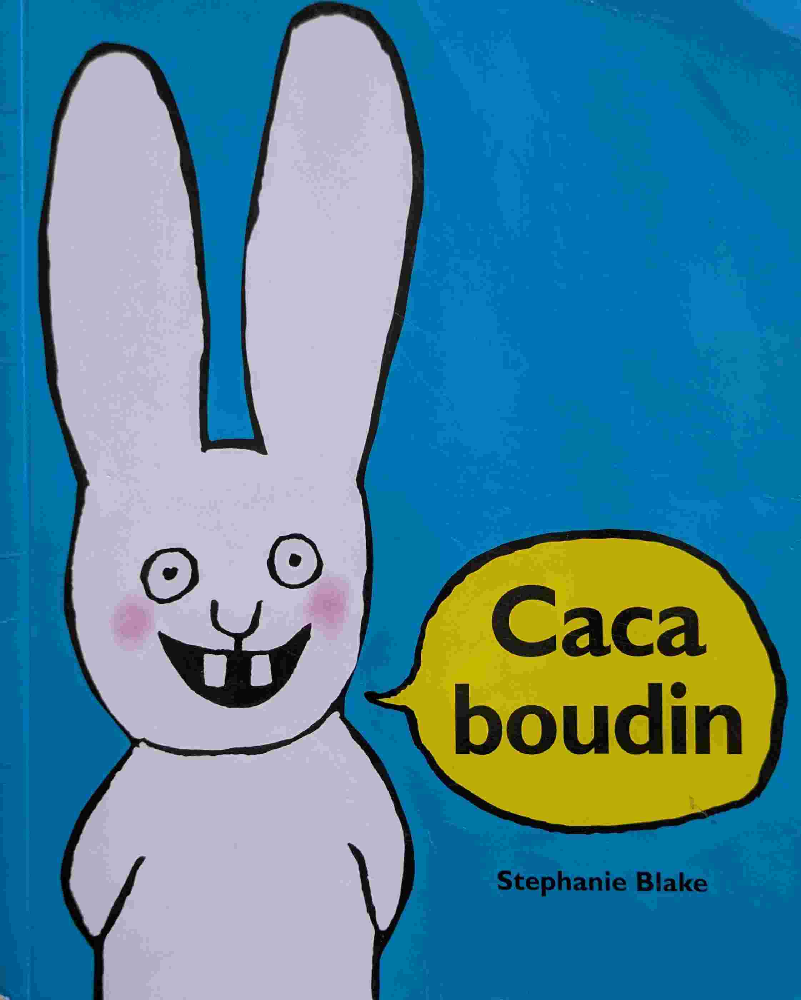

Pour rire
Introduction
Shakespeare avait l'ambition de faire rire. Alors pourquoi ne pas en faire autant avec nos petits ?
Une histoire à quatre voix (Anthony Browne)

Une histoire racontée par quatre personnages différents, chacun avec sa propre perspective. Très drole, et offre une réflexion sur la subjectivité des points de vue. Les illustrations sont bourrées de détails en arrière-plan: à chaque lecture on découvre un nouveau détail.
Prix Sorcière 1999 (Catégorie albums)
Les poulets guerriers (Catherine Zarcate)

Attention: ce livre nécessite de se donner la peine de chanter la 'Chanson des poulet guerriers'. Si vous trouvez le bon rythme, succès assuré !
La brouille (Claude Boujon)

Deux petits lapins voisins, qui commencent à se brouiller pour de broutilles. Mais un renard va remettre de l'ordre dans tout ça.
Le tapis en peau de tigre (Gerald Rose)

Comme quoi les tigres ne sont pas toujours à envier. Mais tout en bien qui finit bien !
L'art du pot (Jean Claverie et Michele Nikly)

Un super livre pour démystifier le pot. Très drole, très vrai, et de jolis dessins
Prix Sorcière 1991 (Catégorie tout-petits)
Grosse Légume (Jean Gourounas)

À mourir de rire. L'histoire d'un ver qui s'enfile des légumes. Attention, pour que le charme opère, il faut que le lecteur lise le livre de manière rythmique. Les kids en redemandent!
Prix Sorcière 2005 (Catégorie tout-petits)
Enfin la paix (Jill Murphy)

Papa ours veut dormir. Mais ça ne se passe pas toujours comme prévu.
Le Gruffalo (Julia Donaldson et Axel Scheffler)

La loi du plus fort est toujours la meilleure. Vraiment? La petite souris et le Gruffalo nous montrent qu'il n'en va pas toujours ainsi.Un bon comique de répétition.
On joue, Petit Lapin! (Jörg Mühle)

De belles illustrations, des mini-histoires rigolotes. Un final qui fait toujours rire même à la dixième lecture. Simple mais efficace.
Course épique (Marie Dorléans)

Les course à Longchamps c'est bien mais c'est pas très marrant. Ce livre permet d'inverser la tendance!
Au lit, petit monstre! (Mario Ramos)

Les enfants sont parfois des petits monstres, surtout au moment du coucher. Mais le monstre n'est pas toujours celui qu'on croit...
Occupé (Matthieu Maudet)

Les toilettes sont occupées. Et la file d'attente s'allonge. Mais gare à la chute!
Prout de Mammouth (Noé Carlain)

Des animaux et des prouts. C'est pas du Shakespeare, et je me rapelle avoir entendu des 'Oh mais arretez avec ce livre'! Mais merci Pauline pour les séances de rigolade !
La belle lisee poire du prince de Motordu (Pef)

Un livre plein d'humour sur les jeux de mots et les sonorités.
Plouf! (Philippe Corentin)

Quand on voît quelque chose qui brille au fond d'un puit, faut réfléchir avant de sauter!
Caca boudin (Stephanie Blake)

Tout est dans le titre.C'est pas du Shakespeare, mais tout le monde rigole.